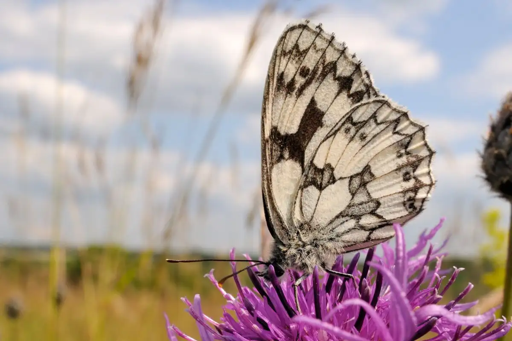
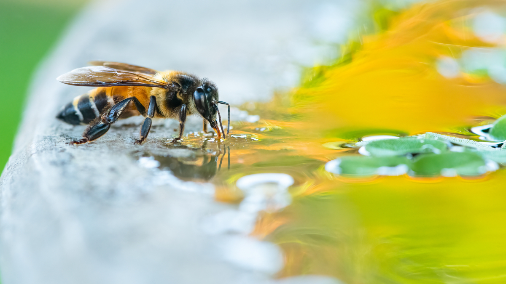
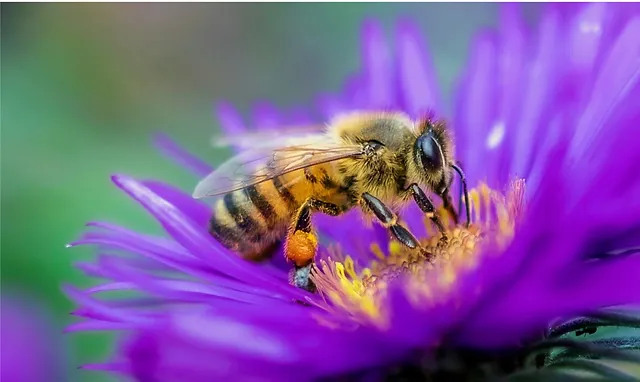
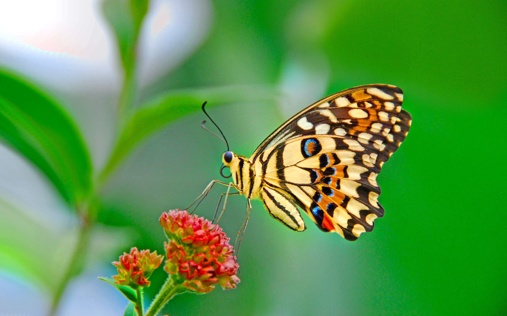

Environmental Impacts of Pollution on Pollinators
Pollinators play a vital role in food production, but pollution is harming them. Learn more about their decline and how we can help.
Introduction: The Importance of Pollinators
Pollinators such as bees, butterflies, and birds are vital to biodiversity and food production. These species ensure the continued existence of a wide range of plant species, including many crops that humans rely on. However, pollution is significantly impacting their populations. Air, water, and soil pollution are contributing to the decline of pollinators, and it’s essential to understand how these forms of pollution affect them. By addressing these issues, we can help protect pollinators for future generations.

Pollution Types and Their Impacts
Air Pollution
Airborne pollutants like ozone and particulate matter reduce pollinators’ ability to navigate and forage effectively. These pollutants also harm their respiratory systems, weakening them over time.
Water Pollution
Polluted water sources poison pollinators and degrade their habitats, impacting both aquatic and terrestrial species. Agricultural runoff, which often carries pesticides and heavy metals, is a major contributor.
Soil Pollution
Soil contamination from heavy metals and pesticides affects plant health and quality, which in turn affects pollinators’ food sources. Pollinators like bees depend on healthy plants for nectar and pollen.
Noise Pollution
Noise pollution disrupts communication among pollinators, particularly species like bees that rely on vibrations for navigation and coordination within their colonies. High levels of noise can also cause stress.
Research Findings
Recent studies have consistently shown the harmful effects of pollution on pollinators:
- Pesticide exposure, particularly neonicotinoids, can impair memory and navigation abilities in pollinators.
- Habitat degradation reduces pollinators' access to necessary resources, such as clean water and food plants.
- Pollution in rivers, streams, and ponds poisons aquatic pollinators and disrupts the ecosystems they rely on.
Solutions: Protecting Pollinators
To protect pollinators and reduce pollution, we can take the following actions:
- Reduce Pollution: Advocate for stronger environmental regulations and reduce pesticide use.
- Protect Habitats: Create pollinator-friendly environments by planting native species and reducing habitat destruction.
- Support Conservation Efforts: Join organizations working to protect pollinators and support scientific research.
- Raise Awareness: Educate the public about the importance of pollinators and the role they play in our ecosystems.
Did You Know?
Click the button to generate a random fact about pollinators!